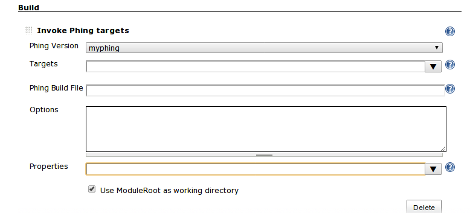

Zautomatyzuj swoje życie z Phing'iem
DrupalCamp 2015 Wrocław
Autor Piotr Sobieszczański / @sobi3ch
Czego sie dzisiaj dowiemy?
- Po co w ogóle automatyzować?
- Co to jest Phing?
- Instalacja
- Przykłady
- Rozszerzanie Phing'a
Po co w ogóle automatyzować?
- Łatwiejsze przekazywanie projektu
- Polepszanie jakości
- Zmniejszenie ilości popełnianych błędów
- Oszczędność czasu
- Konsolidacja skryptów, redukcja technologicznego długu (techichal debt)
Automatyzuj!
Lepiej automatyzować jakkolwiek i czymkolwiek niż w ogóle.
Co to jest Phing?
- PHING = PHing is not GNU make (akronim rekurencyjny)
- Napisany w PHP, "zgapiony" z projektu Apache Ant.
- Oparty na XML'u
- Wieloplatformowy (*nix, OSX, Windows)
- Integruje wiekszość popularnych narzędzi używanych przy projektach PHP. (Wliczając drush'a)
- Wielozadaniowy! (tasks)
Co to jest Phing?
- Podstawowe komponenty
- Task: wykonuje konkretne zadanie (np: kopiuj, git commit, drush make itp.)
- Target: kolekcja zadań (cel), opcjonalnie może zależeć od innych zadań
- Project: Głowny wezeł XML'a. Zawiera zbiór celów (targets).
Co to jest Phing?
Rodzaje PODSTAWOWYCH zadań (TASKS)
AdhocTaskdef, AdhocTypedef, Append, Apply, Available, Basename, Chmod, Chown, Condition, Copy, CvsTask, CvsPass, Delete, Diagnostics, Dirname, Echo, Exec, Fail, Foreach, If, Import, IncludePath, Input, LoadFile, Mkdir, Move, PathToFileSet, Phing, PhingCall, Phingversion, PhpEval, Property, PropertyPrompt, Record, Reflexive, ResolvePath, Switch, Touch, TryCatch, Tstamp, Typedef, UpToDate, WaitFor, Xslt
Instalacja
-
PEAR
$ pear channel-discover pear.phing.info $ pear install [--alldeps] phing/phing -
Composer
{ "require-dev": { "phing/phing": "2.*" } } -
Pakiet Phar
$ php phing-latest.phar
Podstawy
-
Główny plik phing'a
build.xml
Podstawy
build.xml
Podstawy
build.xml w akcji
$ phing [-f build.xml]
Podstawy
build.xml w akcji
Podstawy
kopiowanie
Podstawy
kopiowanie
Podstawy
kopiowanie
Podstawy
zmiana nazwy/przenoszenie
Podstawy
tworzenie
Podstawy
uruchamianie komend
Podstawy
uruchamianie komend

Podstawy
uruchamianie komend

Podstawy
drush - definicja
Podstawy
drush - odświeżanie pamięci podręcznej
Podstawy
drush - reset hasla dla UID 1
Przykłady
-
Podstawowe operacje na plikach (
cp, mv, touch) -
Klasyczne wykonanie komend
exec -
Drupal
drush! jako rozszerzenie - Testowanie
- Wdrażanie (deploy)
- Ciągła integracja
- Jenkins
Testowanie
Wdrażanie
Ciągła integracja
ciagla integracja..
Jenkins
Przykłady
Rozszerzanie Phing'a
require_once "phing/Task.php";
class MyEchoTask extends Task {
private $message = null; // << wiadomosc dla pliku build.xml
public function setMessage($str) { // << setter
$this->message = $str;
}
public function init() { // << definicja kroków inicjacyjnych
// jakies kroki
}
public function main() { // << glowny punk startu
print($this->message);
}
}
Pytania?
Prezentacja jest dostępna na github'ie.
https://github.com/sobi3ch/drupalCamp2015-wroclaw-phing